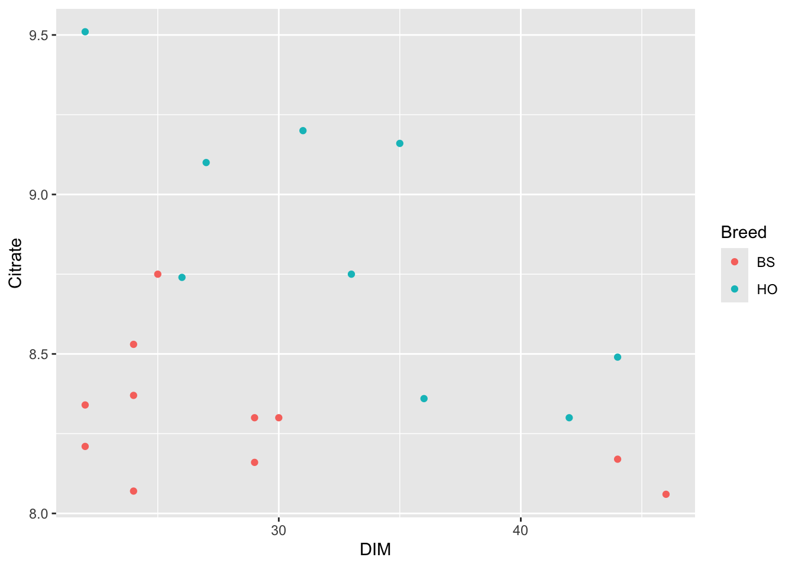

set.seed(2405)
n_nr_obs <- 20
# dim
n_dim_start <- 20
n_dim_end <- 50
# citrate
n_cit_max <- 9.2
n_cit_min <- 8.5
n_cit_mean <- mean(c(n_cit_max, n_cit_min))
n_cit_sd <- 0.24
n_reg_coef <- (n_cit_min - n_cit_max) / (n_dim_end - n_dim_start)
n_reg_intc <- 9.0
n_intac_br_dim <- -n_reg_coef / 25ASM Exam 2024: Problem 3
Background
Include interactions between breed and DIM into the dataset. Use parameter from Problem 1 …
Data Simulation
The DIM values are sampled from a uniform distribution determined by the DIM-range.
vec_dim <- round(runif(n_nr_obs, min = n_dim_start, max = n_dim_end), digits = 0)
vec_dim <- vec_dim[order(vec_dim)]
vec_dim [1] 22 22 22 24 24 24 25 26 27 29 29 30 31 33 35 36 42 44 44 46The vector of breeds is sampled randomly
vec_breed_eff <- c(0, 0.46)
vec_breed_name <- c("BS", "HO")
vec_breed <- sample(vec_breed_name, n_nr_obs, replace = T)
vec_breed [1] "BS" "HO" "BS" "BS" "BS" "BS" "BS" "HO" "HO" "BS" "BS" "BS" "HO" "HO" "HO"
[16] "HO" "HO" "HO" "BS" "BS"The data is generated using breed as factor, DIM as regression coefficient and an interaction between DIM and breed
vec_breed_fct <- as.factor(vec_breed)
mat_X_dim_breed <- model.matrix(y ~ breed * dim,
data = data.frame(y = rep(1, n_nr_obs),
breed = vec_breed_fct,
dim = vec_dim))
attr(mat_X_dim_breed, "assign") <- NULL
attr(mat_X_dim_breed, "contrasts") <- NULL
dimnames(mat_X_dim_breed) <- NULL
mat_X_dim_breed [,1] [,2] [,3] [,4]
[1,] 1 0 22 0
[2,] 1 1 22 22
[3,] 1 0 22 0
[4,] 1 0 24 0
[5,] 1 0 24 0
[6,] 1 0 24 0
[7,] 1 0 25 0
[8,] 1 1 26 26
[9,] 1 1 27 27
[10,] 1 0 29 0
[11,] 1 0 29 0
[12,] 1 0 30 0
[13,] 1 1 31 31
[14,] 1 1 33 33
[15,] 1 1 35 35
[16,] 1 1 36 36
[17,] 1 1 42 42
[18,] 1 1 44 44
[19,] 1 0 44 0
[20,] 1 0 46 0Generate the data
vec_dim_br_int_eff <- c(n_reg_intc, vec_breed_eff[2], n_reg_coef, n_intac_br_dim)
vec_cit <- crossprod(t(mat_X_dim_breed), vec_dim_br_int_eff) + rnorm(n_nr_obs, mean = 0, sd = n_cit_sd)
vec_cit_round <- round(vec_cit, digits = 2)
tbl_cit_dim_br_intac <- tibble::tibble(Cow = c(1:n_nr_obs),
DIM = vec_dim,
Breed = vec_breed,
Citrate = vec_cit_round[,1])
tbl_cit_dim_br_intac# A tibble: 20 × 4
Cow DIM Breed Citrate
<int> <dbl> <chr> <dbl>
1 1 22 BS 8.21
2 2 22 HO 9.51
3 3 22 BS 8.34
4 4 24 BS 8.37
5 5 24 BS 8.53
6 6 24 BS 8.07
7 7 25 BS 8.75
8 8 26 HO 8.74
9 9 27 HO 9.1
10 10 29 BS 8.16
11 11 29 BS 8.3
12 12 30 BS 8.3
13 13 31 HO 9.2
14 14 33 HO 8.75
15 15 35 HO 9.16
16 16 36 HO 8.36
17 17 42 HO 8.3
18 18 44 HO 8.49
19 19 44 BS 8.17
20 20 46 BS 8.06Plot
library(ggplot2)
p <- ggplot(data = tbl_cit_dim_br_intac,
aes(x = DIM, y = Citrate)) +
geom_point(aes(color = Breed))
p
Write Data
The data is written to a file
s_cit_dim_br_intac_path <- here::here("docs", "data", "asm_exam_2024_p03.csv")
#unlink(s_cit_dim_br_intac_path)
if (!file.exists(s_cit_dim_br_intac_path)){
readr::write_delim(tbl_cit_dim_br_intac, file = s_cit_dim_br_intac_path, delim = ",")
}Group Means
library(dplyr)
Attaching package: 'dplyr'The following objects are masked from 'package:stats':
filter, lagThe following objects are masked from 'package:base':
intersect, setdiff, setequal, uniontbl_cit_dim_br_intac_gr_mean <- tbl_cit_dim_br_intac %>%
group_by(Breed) %>%
summarise(Cit_Group_Mean = mean(Citrate),
DIM_Group_Mean = mean(DIM))
tbl_cit_dim_br_intac_gr_mean# A tibble: 2 × 3
Breed Cit_Group_Mean DIM_Group_Mean
<chr> <dbl> <dbl>
1 BS 8.30 29
2 HO 8.85 32.9Linear Model
lm_cit_dim_br_intac <- lm(Citrate ~ DIM * Breed, data = tbl_cit_dim_br_intac)
smry_lm_cit_dim_br_intac <- summary(lm_cit_dim_br_intac)
smry_lm_cit_dim_br_intac
Call:
lm(formula = Citrate ~ DIM * Breed, data = tbl_cit_dim_br_intac)
Residuals:
Min 1Q Median 3Q Max
-0.40476 -0.13973 0.00115 0.13979 0.40915
Coefficients:
Estimate Std. Error t value Pr(>|t|)
(Intercept) 8.618906 0.274677 31.378 8.45e-16 ***
DIM -0.011122 0.009131 -1.218 0.24084
BreedHO 1.655131 0.481022 3.441 0.00336 **
DIM:BreedHO -0.032311 0.014883 -2.171 0.04531 *
---
Signif. codes: 0 '***' 0.001 '**' 0.01 '*' 0.05 '.' 0.1 ' ' 1
Residual standard error: 0.2423 on 16 degrees of freedom
Multiple R-squared: 0.7172, Adjusted R-squared: 0.6642
F-statistic: 13.53 on 3 and 16 DF, p-value: 0.0001181